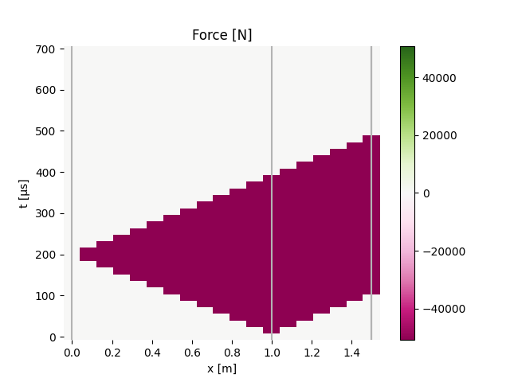
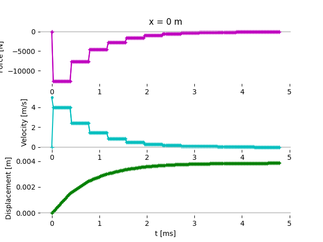
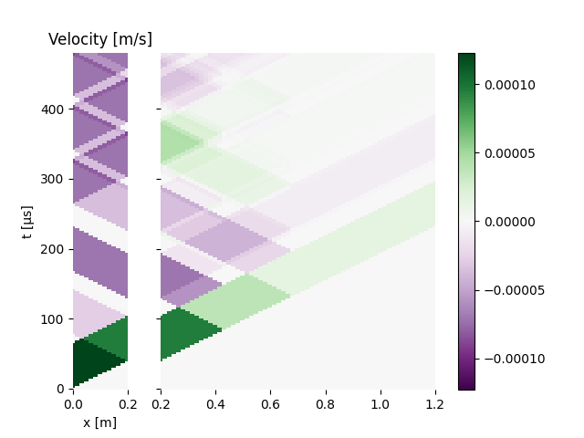
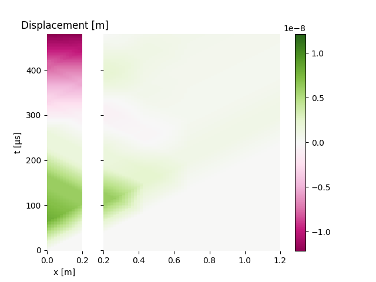
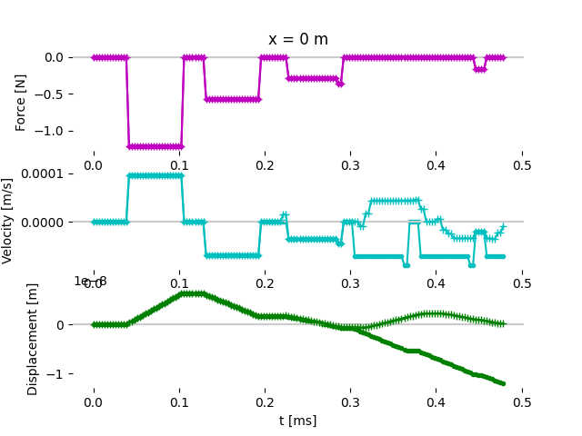

Note
Click here to download the full example code
Displacement and contact loss¶
This example illustrates the loss of contact when two bars in contact do not have the same impedance.
import numpy as np
import matplotlib.pyplot as plt
from elwaspatid import Waveprop, WP2, Barhomo, Barhete
plt.close('all')
E = 210e9 # [MPa]
rho = 7800 # [kg/m3]
L = 1 # [m]
d = 0.02 # [m]
incw = np.zeros(80) # incident wave
incw[0:20] = 1 # /!\ traction pulse
Small impedance against large impedance¶
The impacting bar stays in contact with the right bar during one back-and-forth travel of the compression wave in it. Then contact ceases and the left bar strarts travelling to the left. A Heaviside compression pulse travels down the right bar.
L = 1 # [m]
bar = Barhete([E, E], [rho, rho], [L, 0.5*L], [d, 2*d], nmin=6)
testk = WP2(bar, left='free', right='infinite', Vinit=5)
testk.plot()
testk.plotInterface(0, 'interface')
- 
![Velocity [m/s]](../_images/sphx_glr_plot_5_contactLoss_002.png)
![Displacement [m]](../_images/sphx_glr_plot_5_contactLoss_003.png)

Out:
Simulation time set to 2 travels across all bars.
Setting initial velocity of first segment (Vo=5)
/home/dbrizard/Miscellaneous/prop1d/src/elwaspatid/elwaspatid.py:397: MatplotlibDeprecationWarning: Adding an axes using the same arguments as a previous axes currently reuses the earlier instance. In a future version, a new instance will always be created and returned. Meanwhile, this warning can be suppressed, and the future behavior ensured, by passing a unique label to each axes instance.
ax1 = plt.subplot(nsbp, 1, 1)
/home/dbrizard/Miscellaneous/prop1d/src/elwaspatid/elwaspatid.py:404: MatplotlibDeprecationWarning: Adding an axes using the same arguments as a previous axes currently reuses the earlier instance. In a future version, a new instance will always be created and returned. Meanwhile, this warning can be suppressed, and the future behavior ensured, by passing a unique label to each axes instance.
plt.subplot(nsbp, 1, 2, sharex=ax1)
/home/dbrizard/Miscellaneous/prop1d/src/elwaspatid/elwaspatid.py:411: MatplotlibDeprecationWarning: Adding an axes using the same arguments as a previous axes currently reuses the earlier instance. In a future version, a new instance will always be created and returned. Meanwhile, this warning can be suppressed, and the future behavior ensured, by passing a unique label to each axes instance.
plt.subplot(nsbp, 1, 3, sharex=ax1)
Large impedance against small impedance¶
In that case, the impacting bar stays in contact indefinitly with the right bar and a “stair” compression pulse develops in the right bar, with steps of decreasing amplitude. See also sphx_glr_auto_examples_plot_3_ElasticImpact.py
bar = Barhete([E, E], [rho, rho], [L, L], [d, 0.5*d], nmin=6)
testl = WP2(bar, nstep=150, left='free', right='infinite', Vinit=5)
testl.plot()
testl.plotInterface(0, 'interface2')
![Force [N]](../_images/sphx_glr_plot_5_contactLoss_005.png)
![Velocity [m/s]](../_images/sphx_glr_plot_5_contactLoss_006.png)
![Displacement [m]](../_images/sphx_glr_plot_5_contactLoss_007.png)
- 
Out:
Setting initial velocity of first segment (Vo=5)
/home/dbrizard/Miscellaneous/prop1d/src/elwaspatid/elwaspatid.py:397: MatplotlibDeprecationWarning: Adding an axes using the same arguments as a previous axes currently reuses the earlier instance. In a future version, a new instance will always be created and returned. Meanwhile, this warning can be suppressed, and the future behavior ensured, by passing a unique label to each axes instance.
ax1 = plt.subplot(nsbp, 1, 1)
/home/dbrizard/Miscellaneous/prop1d/src/elwaspatid/elwaspatid.py:404: MatplotlibDeprecationWarning: Adding an axes using the same arguments as a previous axes currently reuses the earlier instance. In a future version, a new instance will always be created and returned. Meanwhile, this warning can be suppressed, and the future behavior ensured, by passing a unique label to each axes instance.
plt.subplot(nsbp, 1, 2, sharex=ax1)
/home/dbrizard/Miscellaneous/prop1d/src/elwaspatid/elwaspatid.py:411: MatplotlibDeprecationWarning: Adding an axes using the same arguments as a previous axes currently reuses the earlier instance. In a future version, a new instance will always be created and returned. Meanwhile, this warning can be suppressed, and the future behavior ensured, by passing a unique label to each axes instance.
plt.subplot(nsbp, 1, 3, sharex=ax1)
Contact loss detection¶
Why contact loss detection is useless??
Second bar with section increase¶
bar = Barhete([E, E], [rho, rho], [.2*L, L], [.8*d, d], nmin=12)
bar.changeSection(iseg=1, l=L/4, d=2*d)
bar.changeSection(iseg=1, l=L/2, d=4*d)
bar.plotProperties('Z')

Out:
Markers and step positions are not precise yet...
Markers and step positions are not precise yet...
No contact loss¶
testm = WP2(bar, nstep=150, left='free', right='infinite', Vinit=5, contactLoss=None)
testm.plot()
testm.plotInterface(0, 'NoCL')
print(testm.contact)
![Force [N]](../_images/sphx_glr_plot_5_contactLoss_010.png)
![Velocity [m/s]](../_images/sphx_glr_plot_5_contactLoss_011.png)
![Displacement [m]](../_images/sphx_glr_plot_5_contactLoss_012.png)

Out:
Setting initial velocity of first segment (Vo=5)
/home/dbrizard/Miscellaneous/prop1d/src/elwaspatid/elwaspatid.py:397: MatplotlibDeprecationWarning: Adding an axes using the same arguments as a previous axes currently reuses the earlier instance. In a future version, a new instance will always be created and returned. Meanwhile, this warning can be suppressed, and the future behavior ensured, by passing a unique label to each axes instance.
ax1 = plt.subplot(nsbp, 1, 1)
/home/dbrizard/Miscellaneous/prop1d/src/elwaspatid/elwaspatid.py:404: MatplotlibDeprecationWarning: Adding an axes using the same arguments as a previous axes currently reuses the earlier instance. In a future version, a new instance will always be created and returned. Meanwhile, this warning can be suppressed, and the future behavior ensured, by passing a unique label to each axes instance.
plt.subplot(nsbp, 1, 2, sharex=ax1)
/home/dbrizard/Miscellaneous/prop1d/src/elwaspatid/elwaspatid.py:411: MatplotlibDeprecationWarning: Adding an axes using the same arguments as a previous axes currently reuses the earlier instance. In a future version, a new instance will always be created and returned. Meanwhile, this warning can be suppressed, and the future behavior ensured, by passing a unique label to each axes instance.
plt.subplot(nsbp, 1, 3, sharex=ax1)
{'state': [], 'threshold': None}
Contact loss¶
testc = WP2(bar, -incw, nstep=150, left='free', right='infinite', Vinit=0, contactLoss=1e-9)
testc.plot()
testc.plotInterface(0, 'CL')
print(testc.contact)
![Force [N]](../_images/sphx_glr_plot_5_contactLoss_014.png)
- 
- 
- 
Out:
/home/dbrizard/Miscellaneous/prop1d/src/elwaspatid/elwaspatid.py:397: MatplotlibDeprecationWarning: Adding an axes using the same arguments as a previous axes currently reuses the earlier instance. In a future version, a new instance will always be created and returned. Meanwhile, this warning can be suppressed, and the future behavior ensured, by passing a unique label to each axes instance.
ax1 = plt.subplot(nsbp, 1, 1)
/home/dbrizard/Miscellaneous/prop1d/src/elwaspatid/elwaspatid.py:404: MatplotlibDeprecationWarning: Adding an axes using the same arguments as a previous axes currently reuses the earlier instance. In a future version, a new instance will always be created and returned. Meanwhile, this warning can be suppressed, and the future behavior ensured, by passing a unique label to each axes instance.
plt.subplot(nsbp, 1, 2, sharex=ax1)
/home/dbrizard/Miscellaneous/prop1d/src/elwaspatid/elwaspatid.py:411: MatplotlibDeprecationWarning: Adding an axes using the same arguments as a previous axes currently reuses the earlier instance. In a future version, a new instance will always be created and returned. Meanwhile, this warning can be suppressed, and the future behavior ensured, by passing a unique label to each axes instance.
plt.subplot(nsbp, 1, 3, sharex=ax1)
{'state': [1, 1, 1, 1, 1, 1, 1, 1, 1, 1, 1, 1, 1, 1, 1, 1, 1, 1, 1, 1, 1, 1, 1, 1, 1, 1, 1, 1, 1, 1, 1, 1, 1, 1, 1, 1, 1, 1, 1, 1, 1, 1, 1, 1, 1, 1, 1, 1, 1, 1, 1, 1, 1, 1, 1, 1, 1, 1, 1, 1, 1, 1, 1, 1, 1, 1, 1, 1, 1, 1, 1, 1, 1, 1, 1, 1, 1, 1, 1, 1, 1, 1, 1, 1, 1, 1, 1, 1, 1, 1, 1, 1, 1, 1, 1, 1, 1, 1, 0, 0, 0, 0, 0, 0, 0, 0, 0, 0, 0, 0, 0, 0, 0, 0, 0, 0, 0, 0, 0, 0, 0, 0, 0, 0, 0, 0, 0, 0, 0, 0, 0, 0, 0, 0, 0, 0, 0, 0, 0, 0, 0, 0, 0, 0, 0, 0, 0, 0, 0], 'threshold': 1e-09}
Total running time of the script: ( 0 minutes 6.403 seconds)